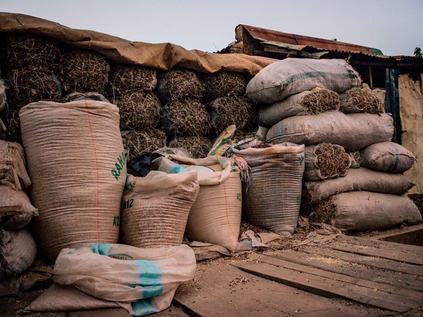

Article Title
Want the complete 2,000-word analysis & telemetry?
Access the full article with complete empirical tables, methodology notes, interactive charts, and academic citation downloads.
Unfiltered analysis, expert opinions, and behind-the-scenes data stories written by Renalytica’s economists, field researchers, and guest industry practitioners across African markets.
Trade agreements like the AfCFTA provide the diplomatic framework, but true regional commerce is determined by diesel tariffs, border bottlenecks, and informal currency clearing. Here is what 180 days of field data reveals.

Explore plain-English analyses spanning agribusiness adoption, currency devaluation hedging, informal retail dominance, and wholesale B2B payments.
 Agri-Business & Food Systems
Agri-Business & Food Systems

Behind The Data // Field Dispatch Op-Ed // Retail & Consumer Markets
Op-Ed // Retail & Consumer Markets
 Financial Infrastructure & Fintech
Financial Infrastructure & Fintech
Immediate 600–800 word perspectives on trending market policies and commercial debates across Africa.
Aggregators are often vilified by politicians for price gouging, but our field data proves they absorb massive transport risks, finance smallholder farmers before banks will, and prevent post-harvest spoilage by deploying immediate off-take cash.
Removing fuel subsidies causes short-term price shocks, but keeping them creates chronic diesel shortages that stall harvests in rural transit corridors. We run the numbers on which policy delivers lower long-term consumer food prices.
National accounts consistently underestimate informal sector economic velocity by 30% to 45%. If your corporate market entry strategy relies solely on official GDP per capita, you are underestimating your addressable market.
Every article on the Renalytica Blog connects directly to our verified community of researchers, corporate analysts, and commercial directors.
Need the raw Excel telemetry files, econometric regression tables, or survey manifests referenced in this op-ed for your board pack?
Have a technical question about methodology, local sample sizes, or regional trade policies? Our research desk responds within 24 hours.
We welcome data-grounded op-eds and analytical essays from corporate executives, academic economists, agricultural operators, and policy analysts.
We do not publish speculative think-pieces or regurgitated secondary news. Submissions must be backed by verifiable data, field experience, or operational evidence.
Plain English is mandatory. We reject submissions laden with academic jargon, unreadable formulas, or buzzword-heavy consulting terminology.
Every piece must leave business leaders, investors, or policymakers with concrete, practical insights they can apply immediately.
800 to 1,500 words for standard blog articles; 1,200 to 2,200 words for deep-dive Op-Eds. Charts and visual data tables are welcomed.
Access the full article with complete empirical tables, methodology notes, interactive charts, and academic citation downloads.
Provide your corporate credentials to receive verified underlying data files.
Verified Executive Discussion
To preserve analytical rigor, contributions require verification via corporate email or LinkedIn.
“The 72-hour border metric by Dr. Okafor is spot on. We recently rerouted our tomato paste raw materials through domestic processing in Kaduna precisely because border demurrage was eroding our entire AfCFTA margin advantage.”
“The 8% to 14% border currency spread mentioned in Section 3 matches our internal FX audit on the northern transit routes. Central bank settlement switches need physical market cash liquidity to succeed.”